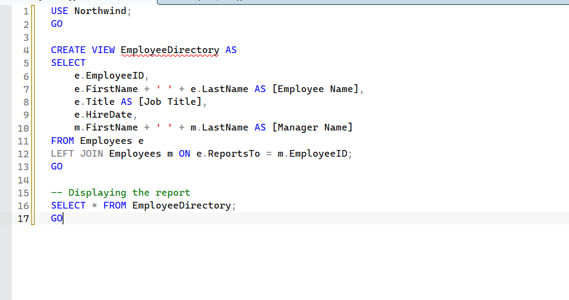
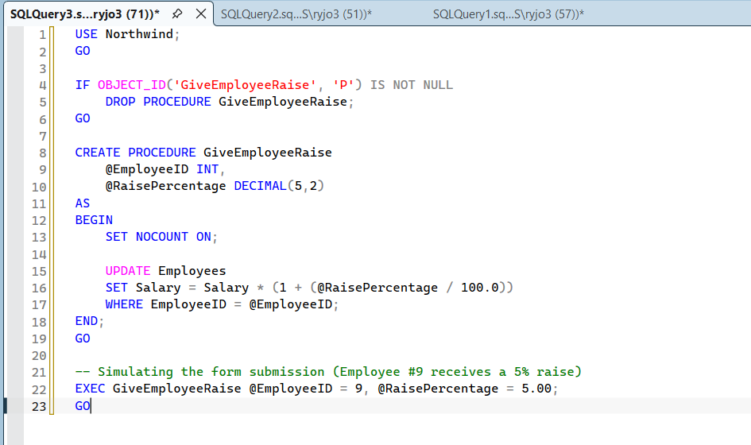

Microsoft SQL Server Management & Reporting
Project Overview: This was part of a Purdue project that required us to design and deploy relational database architectures using Microsoft SQL Server Management Studio (SSMS), as well as update and delete data, user rolls, and database objects.
Technical Implementation
- Database Administration: Constructed and optimized relational tables, establishing proper primary and foreign key relationships alongside data integrity constraints.
- Reports: Created intuitive user reports and views that include only the necessary permissions and information.
- Procedure Creation: Structured simple procedures that allow efficient updates to data and consolidation of tasks.
Value Add for IT Environments
This project demonstrates a strong grasp of transactional data management, schema verification, and the ability to bridge backend database structures with front-facing enterprise reporting—essential technical skills for systems analysts, applications support, and general IT support roles.
Visual Documentation & Verification
Below are visual verifications of the operational database structures, showcasing the custom data entry forms and the analytical reporting layouts built from relational tables.
Creating a Database View

A snapshot of the SQL used to create the "EmployeeDirectory" view.
Procedure Creation

A snapshot of the SQL used to create a simple procedure to give employees a raise.